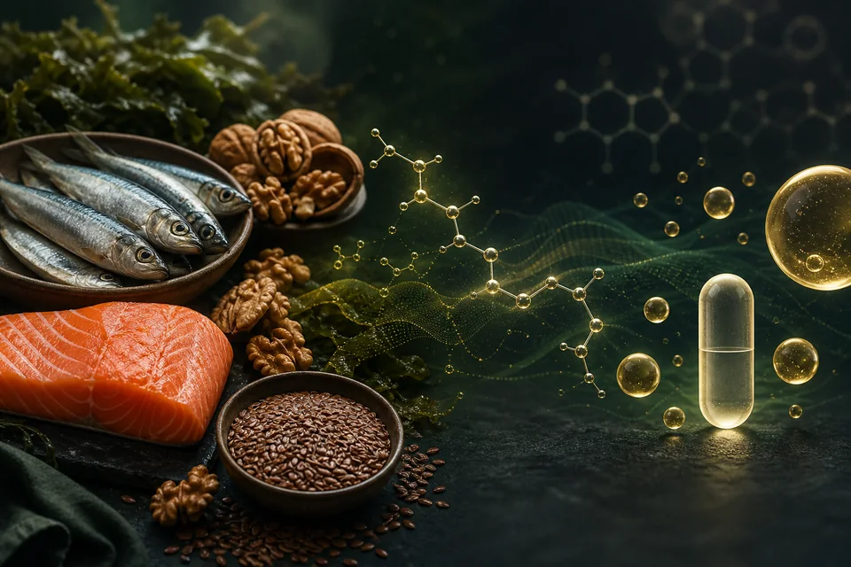

Omega-3
Food vs. Omega-3 Supplements: Where EPA and DHA Actually Come From
Food and supplements can both provide omega-3 fats, but they are not interchangeable shortcuts. The useful comparison begins with which fatty acid you are getting, how much, and what question you are trying to answer.
The Library provides educational information and does not diagnose medical conditions or replace individualized medical care.
Links below go to Zinzino's own site. I'm an independent Zinzino Partner and earn a commission on purchases made through them.

How to read the evidence
Evidence map
Established
Supported by authoritative nutrition guidance and established fatty-acid biology.
- ALA, EPA and DHA are different omega-3 fatty acids.
- Fatty fish and seafood are major dietary sources of preformed EPA and DHA.
- Plant foods such as flax, chia and walnuts primarily provide ALA rather than EPA and DHA.
Supported
Evidence supports the direction, while the size and relevance of the response depend on context.
- EPA and DHA supplements can increase measured EPA and DHA status.
- Conversion of ALA to EPA occurs, while conversion through to DHA is generally more limited and variable.
- Food-first patterns can provide EPA and DHA while also providing protein, vitamins, minerals and other nutrients.
Debated
Research does not support one universal answer for every person or outcome.
- Whether a supplement improves a specific long-term outcome in a particular person.
- The intake or blood target that should apply to every population.
- Whether one supplement form is meaningfully superior across all real-world uses.
Action
A restrained next step that keeps food, context and safety in view.
- Identify whether your current foods provide ALA, EPA, DHA, or a combination.
- Use lower-mercury seafood guidance when fish is part of the plan.
- If considering a supplement, compare the listed EPA and DHA per serving and discuss meaningful changes when medical context matters.
Food versus supplements is the wrong first question
The first useful question is not whether food is good and supplements are bad—or the reverse. It is which omega-3 fatty acid a source provides, what amount reaches the diet, and what decision that information is meant to support.
A serving of salmon, a spoonful of ground flax, and a fish- or algae-oil capsule can all be called omega-3 sources. They do not deliver the same fatty acids in the same amounts, and they do not carry the same nutritional context.
Information — Start with ALA, EPA and DHA
ALA is an essential omega-3 fatty acid found mainly in plant foods. EPA and DHA are longer-chain omega-3 fatty acids found preformed in fish, seafood, fish oils and some algae-derived products.
- ALA
- Alpha-linolenic acid. Common food sources include flaxseed, chia seeds, walnuts and certain plant oils.
- EPA
- Eicosapentaenoic acid. Found preformed in fatty fish, seafood and fish- or algae-derived products.
- DHA
- Docosahexaenoic acid. Found preformed in fatty fish, seafood and fish- or algae-derived products.
The body can convert some ALA into EPA and then DHA. That pathway exists, but it is variable, and conversion through to DHA is generally limited. This does not make ALA unimportant; it means ALA-rich foods should not automatically be treated as dose-for-dose substitutes for preformed EPA and DHA.
Information — Where preformed EPA and DHA come from
Marine microalgae make long-chain omega-3 fatty acids. Fish accumulate EPA and DHA through the marine food web, which is why fatty fish such as salmon, sardines, trout, herring and mackerel are commonly emphasized as dietary sources.
Fish-oil supplements concentrate EPA and DHA from marine oils. Algae-derived products can provide a non-fish source; the amounts of EPA and DHA vary by product, so the Supplement Facts panel matters more than a front-label phrase such as ‘omega-3.’
Education — What food-first actually means
Food-first does not mean that everyone must eat the same fish or that supplements never have a role. It means beginning with the overall eating pattern and using food when it can reasonably meet the need.
The current Dietary Guidelines for Americans includes seafood among nutrient-dense protein foods and emphasizes low-mercury omega-3-rich seafood during pregnancy. FDA and EPA provide more specific fish-choice and serving guidance for people who might become pregnant, are pregnant or breastfeeding, and for children.
- Choose a variety of seafood rather than relying on one species every time.
- Use FDA and EPA fish-choice guidance when mercury exposure requires extra attention.
- Keep ALA-rich plant foods in the diet for the nutrients they provide without pretending they are identical to preformed EPA and DHA.
- Consider the rest of the meal pattern—not one nutrient in isolation.
Education — When a supplement may fit
A supplement can be a practical option when a person does not eat fish, has limited access to suitable seafood, prefers an algae-derived source, or has a specific intake goal discussed with an appropriate healthcare professional. It is an option—not an automatic requirement.
A randomized dose-response trial found that supplemental EPA and DHA increased erythrocyte EPA plus DHA over about five months, with response influenced by dose, baseline status and other individual factors. That supports a biomarker effect. It does not prove that every dose or product produces a particular health outcome.
A large Cochrane review found that increasing long-chain omega-3 intake had little or no effect on several broad cardiovascular outcomes, with modest effects for some outcomes and reduced triglycerides. The practical lesson is not that EPA and DHA do nothing; it is that changing intake, changing a biomarker and changing a clinical outcome are three different claims.
Education — Safety and context still matter
NIH notes that omega-3 supplements can interact with medications, including anticoagulants, and that higher doses deserve additional care. Product concentration, serving size and the combined intake from food and supplements all affect context.
Fish choice raises a different safety question: contaminants such as methylmercury vary by species. FDA and EPA guidance is designed to preserve the nutritional value of fish while reducing exposure for groups who need extra caution.
- Do not start or stop prescribed treatment because of this article.
- Discuss substantial supplement changes when pregnancy, breastfeeding, surgery, bleeding risk, medication use or medical care is involved.
- Treat ‘natural,’ ‘pharmaceutical grade’ and similar front-label phrases as claims to examine, not conclusions.
Action — Build the next step around your situation
- List the omega-3 foods you actually eat in a typical week.
- Separate ALA sources from sources of preformed EPA and DHA.
- If fish fits your diet, choose a practical variety and use lower-mercury guidance where relevant.
- If considering a supplement, compare EPA and DHA per serving, serving size, other ingredients and relevant cautions.
- Decide what question the change is meant to answer before buying or testing anything.
Evidence in context
What we know — and what remains contextual
Well supported
- ALA, EPA and DHA are distinct fatty acids with different major dietary sources.
- Fatty fish and seafood provide preformed EPA and DHA.
- Supplement labels should be read for the listed EPA and DHA amounts rather than total oil alone.
Supported, but contextual
- Supplemental EPA and DHA can raise measured EPA and DHA status.
- ALA conversion contributes to EPA and DHA availability, but conversion—particularly to DHA—is limited and variable.
- Food-first seafood guidance can be a practical starting point for many adults.
Still debated
- A universal intake or biomarker target for every person.
- The clinical importance of a specific biomarker change for an individual.
- The best supplement form for every use, population and outcome.
Food and supplements can both be reasonable sources. The evidence does not support treating either one as a universal prescription.
Evidence notes
- Authoritative guidance establishes common food sources, food-first seafood context, safety considerations and the distinction between ALA, EPA and DHA.
- Randomized trials support that supplemental EPA and DHA can change measured fatty-acid status, but biomarker response is not treated as proof of a guaranteed clinical benefit.
- Outcome evidence is summarized conservatively because effects vary by population, dose, intervention and outcome.
Limitations
- This guide does not calculate an individualized EPA or DHA requirement.
- It does not present ALA as useless or claim that it is fully interchangeable with preformed EPA and DHA.
- It does not claim that fish-oil or algae-oil supplements prevent, diagnose or treat disease.
- It does not rank commercial products or endorse a universal blood target.
Sources
- NIH Office of Dietary SupplementsFact Sheet for Health ProfessionalsOmega-3 Fatty Acids ↗ (opens in a new tab)
Used for definitions of ALA, EPA and DHA; food and supplement sources; ALA conversion; intake and status context; medication interactions; and safety considerations.
- U.S. Departments of Agriculture and Health and Human ServicesDietary Guidelines for Americans, 2025–2030Dietary Guidelines for Americans ↗ (opens in a new tab)
Used for current food-pattern context, including seafood among nutrient-dense protein foods and low-mercury omega-3-rich seafood during pregnancy.
- U.S. Food and Drug Administration and Environmental Protection AgencyPublic fish-consumption guidanceQuestions & Answers from the FDA/EPA Advice about Eating Fish ↗ (opens in a new tab)
Used for lower-mercury fish selection and the 2-to-3-servings guidance for people who might become pregnant, are pregnant or breastfeeding.
- Peer-reviewed reviewBaker et al. (2016) · PMID 27496755Metabolism and functional effects of plant-derived omega-3 fatty acids in humans ↗ (opens in a new tab)
Used for the distinction between plant-derived ALA and preformed EPA and DHA and for the limited, variable conversion of ALA, particularly through to DHA.
- Randomized dose-response trialFlock et al. (2013) · PMID 24252845Determinants of erythrocyte omega-3 fatty acid content in response to fish oil supplementation: a dose-response randomized controlled trial ↗ (opens in a new tab)
Used for the dose-responsive increase in erythrocyte EPA plus DHA and the influence of baseline and individual response variables in the study population.
- Cochrane systematic reviewAbdelhamid et al. (2020) · PMID 32114706Omega-3 fatty acids for the primary and secondary prevention of cardiovascular disease ↗ (opens in a new tab)
Used to distinguish reliable changes in intake or triglycerides from broader clinical-outcome claims and to preserve uncertainty across outcomes.
Where to go next
Choose the next useful step.
Keep learning, return to the process, or consider an optional tool only when it answers a clear question.
Understand your next step
Return to the Matrix
Use Information → Education → Action to decide what—if anything—comes next.
Review the process →